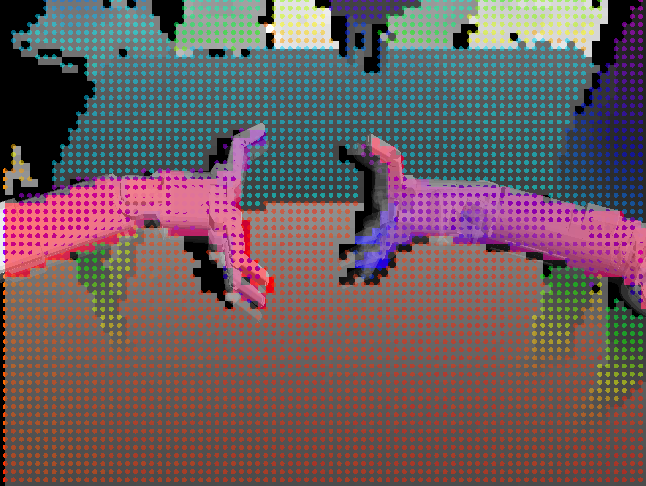

Robotic Sytem Building
Overview

We understand robotics research as a study of complex systems. In such a system, interactions between computational modules exist but their effect is hard to anticipate when each module is developed in isolation. Future applications of robots require testing and validation of computational modules within entire systems.
Check out the papers below on the different ways of integrating robotic systems and how we evaluate different architectures!
Kappler, D., Meier, F., Issac, J., Mainprice, J., Garcia Cifuentes, C., Wüthrich, M., Berenz, V., Schaal, S., Ratliff, N., Bohg, J. Real-time Perception meets Reactive Motion Generation IEEE Robotics and Automation Letters, 3(3):1864-1871, July 2018. Finalist Amazon Best System Paper Award.
Bohg, Jeannette, Welke, Kai, León, Beatriz, Do, Martin, Song, Dan, Wohlkinger, Walter, Aldoma, Aitor, Madry, Marianna, Przybylski, Markus, Asfour, Tamim, Marti, Higinio, Kragic, Danica, Morales, Antonio, Vincze, Markus Task-Based Grasp Adaptation on a Humanoid Robot In 10th IFAC Symposium on Robot Control, SyRoCo 2012, Dubrovnik, Croatia, September 5-7, 2012., pages: 779-786, 2012.
Gratal, X., Romero, J., Bohg, J., Kragic, D. Visual Servoing on Unknown Objects Mechatronics, 22(4):423-435, Elsevier, June 2012, Visual Servoing (SI).
Gratal, X., Bohg, J., Björkman, M., Kragic, D. Scene Representation and Object Grasping Using Active Vision In IROS’10 Workshop on Defining and Solving Realistic Perception Problems in Personal Robotics, October 2010.